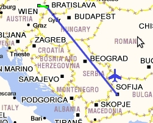
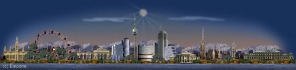

За това пътуване
Самолет: 1556 km
Автомобил: 160 km
Общa Статистика
Самолет: 29415 km
Автомобил: 26819 km
Влак: 3972 km
Кораб: 928 km
Общо: 61134 km
Градове: 52
Държави: 20
Континенти: 2
Low-cost е вълшебна дума за пътешественика. Първите няколко Low-cost компании в България бяха измама, докато не се появи SkyEurope! Полетите бяха до Братислава и от там имаше опция за трансфер с автобус до Виена. Резервирах три месеца по рано и за около 60 Евро вече имах билет за града на изкуството. Всъщност два, единият беше за брат ми, щяхме да ходим заедно. Резервирах и хотел, пак по Интернет и познайте за тези резервации ползвах чисто новата си кредитна карта. Някъде там началото на 2006-та започна навлизането на CC-та в милата ни родина, явно е съвпаднало с появата на евтините полети. Седиш си на компютъра, цъкаш си и си резервираш, готино а?

Полет София - Братислава
Зимата се изниза, дойде пролетта и естествено денят на нашия полет. Самолетът беше чисто нов с прекрасния дизайн на SkyEurope и с още по – прекрасни стюардеси. След около час и нещо във въздуха и гладко приземяване, набивахме крак по плаца на летище Братислава. От там с автобус стигнахме до Виена. По пътя освен безброй вятърни турбини имаше много малки землянки, вероятно изби за вино, жалко че не бяхме с кола за да проучим по обстойно.
Виена

Хотелът ни беше до спирка на метрото и на сутринта за няколко минути се озовахме в самият център на града – площад Свети Стефан. От там разгледахме едноименната катедрала, от която се открива гледка над целия град. Прави впечатление липсата на високи сгради с изключение на кулата Милениум и Телевизионната кула „Дунав“.
Виена е микс от архитектурни шедьоври. Убедихме се без да сме архитекти. Изящни катедрали, барокови сгради, булеварди, не липсват и авангардни проекти, като един ТЕЦ наподобяващ телевизионната кула в Шанхай.
На следващият ден отидохме в двореца Шьонбрун. Оказа се огромен, а градините му великолепни. Но най – прекрасен ми се стори Глориета на върха на хълма зад двореца. Естествено пихме по бира там в знак на уважение към архитектурния гении на човека измислил този комплекс, както и на кралските величия платили за него.
Следобеда прекарахме в Пратера. Не се качихме на „оригиналното“ колело, което според мен е реплика. Но пък за първи път се возих на влакче на смъртта – преживяването е екстремно, на моменти дъхат наистина спира.
Вечерта естествено на бар с брато. Само дето баровете във Виена май са скука или не уцелихме денят, а пък може би и мястото.
Неусетно трите дни изминаха и потеглихме обратно. Отново транзит през Братислава където на летището имахме време само за по един „Velkopopovický Kozel“ и обратно вкъщи.
Виж Галерията от Виена